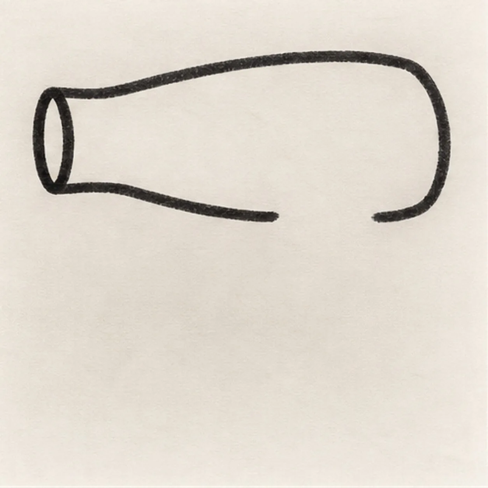
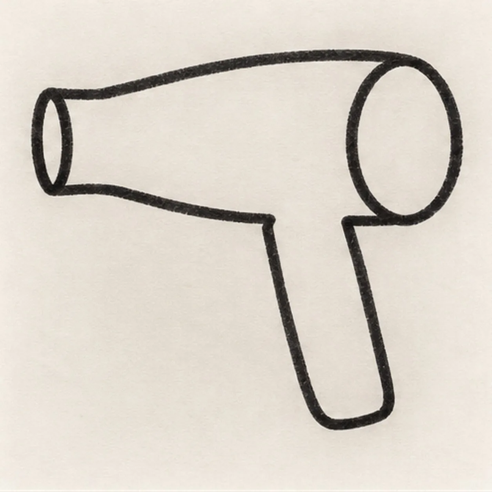
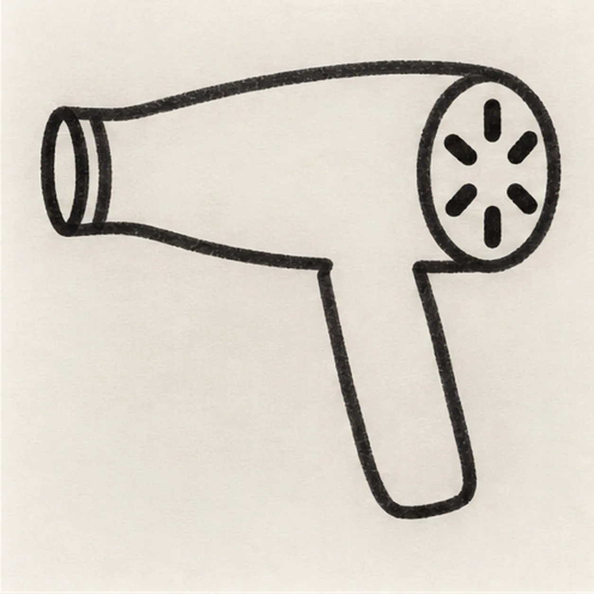
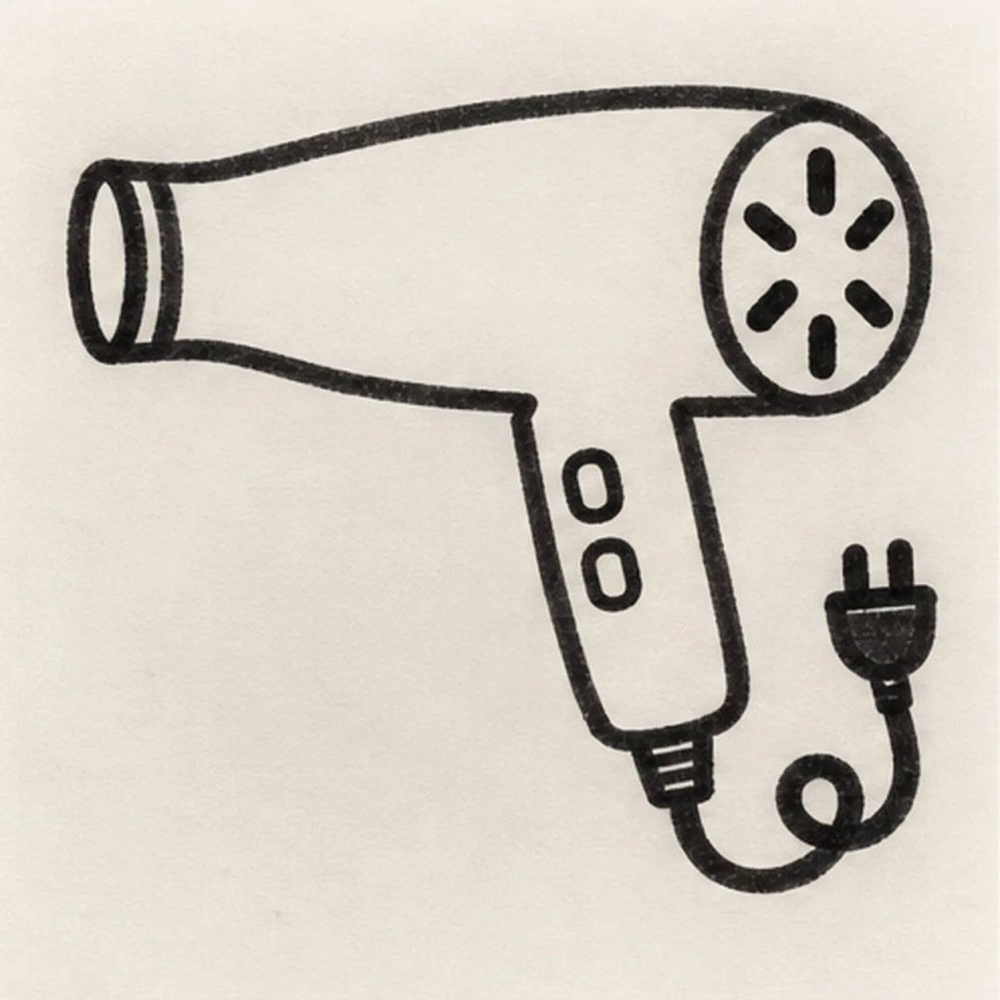
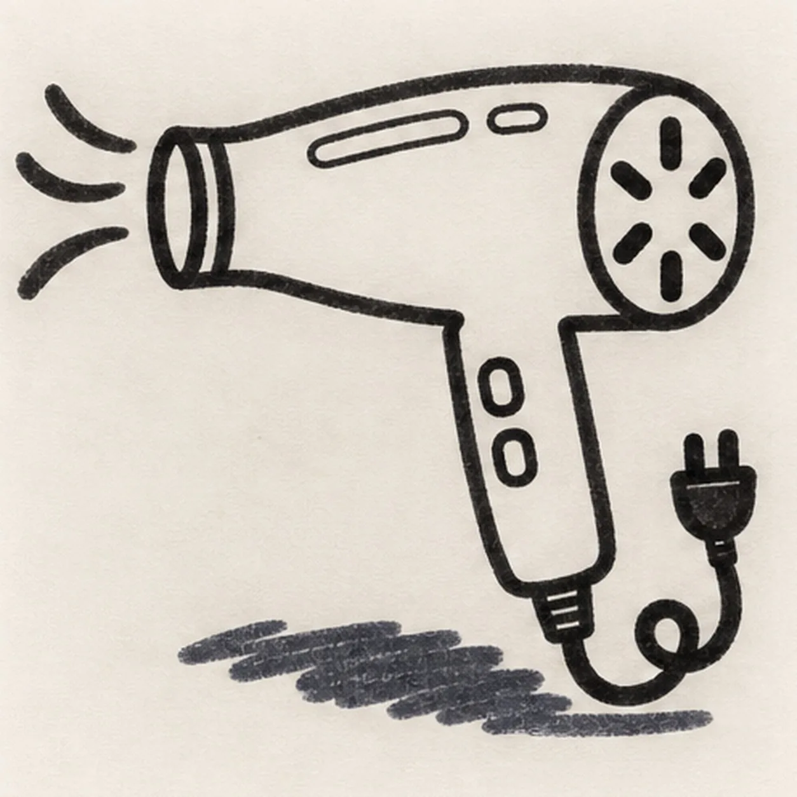

Felt-tip marker mode
Let's draw a hair dryer
Treat this as one playful practice round: sketch the idea loosely, simplify the shapes, then commit with confident marker outlines and bright fills.
-
01

Shape the dryer housing
Draw one long rounded housing across the upper half of the page, then taper its left end into one short open nozzle. Keep the lower middle edge clear for the handle and leave open paper at the right end for the intake.
Marker tip: Ghost the long upper curve twice, then pull it in one confident pass. The open lower gap and blank rear end reserve later attachments without erasing keeper lines.
-
02

Attach the handle and intake
Attach one slightly forward-slanting handle beneath the housing, widening it gently toward the base. Close the right end of the housing with one large round intake and keep its center blank for later vent slots.
Marker tip: Trace the handle into both housing attachment points before closing its base. Keep the intake circle taller than the handle is wide so the tool reads clearly at thumbnail size.
-
03

Cut the vents and nozzle ring
Wrap one narrow ring around the left nozzle opening. Inside the round rear intake, place exactly six short slots radiating from the center while keeping an even paper gap between neighbors.
Marker tip: Place top and bottom slots first, then add the four diagonals. Count six before darkening them, and rotate the page if that keeps the marks evenly aimed.
-
04

Wire the controls and cord
Place exactly two small controls down the handle front. From the handle base, pull one cord downward into a single loose curl and finish it with one simple two-prong plug, keeping the cord behind the dryer silhouette.
Marker tip: Ghost the cord curl once before touching down, then draw it as one relaxed route from handle to plug. Let the plug float beyond the curl without crossing the handle.
-
05

Send out the airflow
Sweep exactly three separate curved airflow lines from the nozzle toward the left. Reserve exactly two small open-paper highlights on the housing, then place one broad broken shadow beneath the dryer without touching the cord.
Marker tip: Pull the three airflow curves in the nozzle direction and vary their lengths slightly. Color around the two highlight shapes and leave paper gaps through the navy shadow.
-
06
![Handmade face-free felt-tip marker drawing of one left-facing coral cartoon hair dryer with one long tapered housing, one teal nozzle ring, one attached teal slanted handle, one warm-yellow round rear intake containing exactly six deep-navy radial vent slots, exactly two warm-yellow handle controls, one deep-navy power cord attached at the handle base and curling once into one two-prong plug, exactly three deep-navy airflow swooshes, exactly two open-paper housing highlights, thick imperfect black outlines, visible marker streaks, and one broad broken deep-navy ground shadow](../assets/cartoon-hair-dryer-finished-v1.webp)
Blow in the marker color
Fill the established housing coral, the handle and nozzle ring teal, the intake and two controls warm yellow, and the cord, plug, airflow, and broken shadow deep navy. Leave both highlights open, strengthen existing black contours, and add no new shapes.
Marker tip: Pull marker strokes lengthwise along the housing and down the handle. Count six vent slots, two controls, three airflow swooshes, and two highlights, then stop while the felt-tip grain still shows.
![Handmade felt-tip marker drawing of one seated warm-brown cartoon monkey holding exactly one golden-yellow banana with orange lower edge, one wide eye with a sideways pupil and white highlight, one crescent squint eye, one raised eyebrow, exactly two nostrils, one off-center grin with exactly two square teeth, exactly two round ears, one three-point hair tuft with small paper gaps, exactly two peach hands, exactly two bent legs with peach feet, one peach belly patch, one long brown tail curled into one open spiral, exactly three banana peel seams, thick imperfect black outlines, visible marker streaks, and one broad broken teal ground shadow](../assets/cartoon-monkey-with-a-banana-finished-v1.webp)
![Handmade face-free felt-tip marker drawing of one coral passenger airplane angled upward to the right with one long rounded fuselage, one broad teal near wing, one smaller warm-yellow far wing, one coral-and-teal engine pod, one teal tail fin, exactly two warm-yellow horizontal stabilizers, one deep-navy cockpit window group, exactly four deep-navy cabin windows, one coral door with one dark dot, exactly two pale-blue clouds, exactly two deep-navy motion dashes, exactly two open-paper highlights, thick imperfect black outlines, visible marker streaks, and one broken deep-navy shadow accent](../assets/cartoon-passenger-airplane-in-flight-finished-v1.webp)